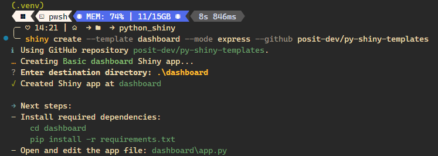
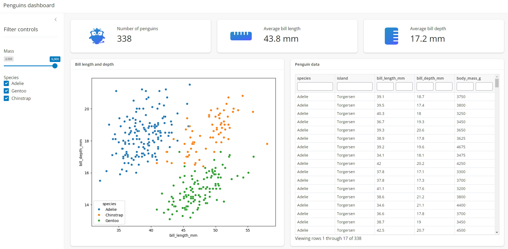
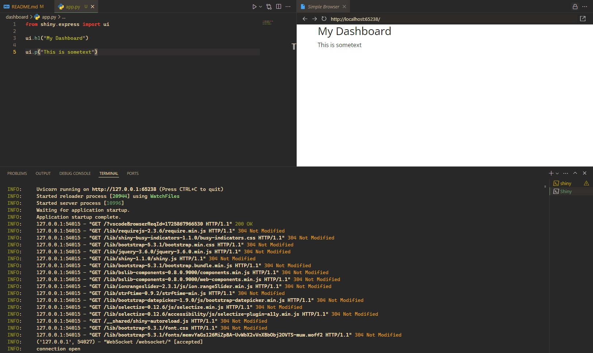
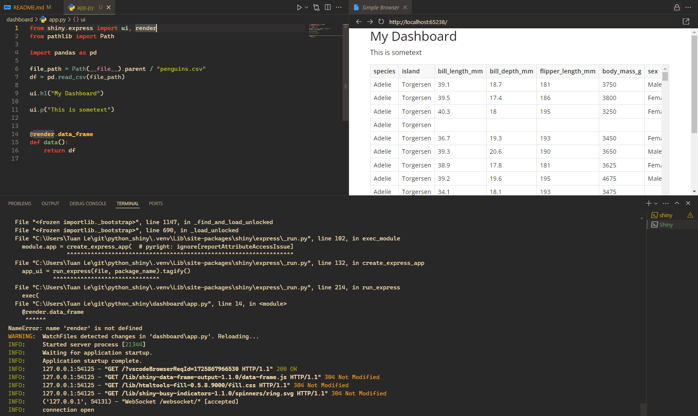
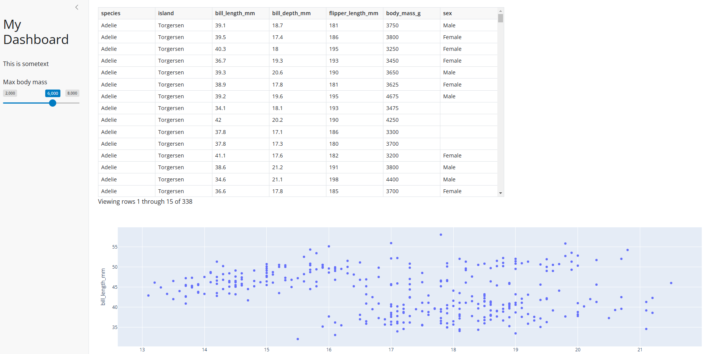

1. Set up & play with a template
After creating a .venv - virtual environment, activating it, we can try a template with the command shiny create --template dashboard --mode express --github posit-dev/py-shiny-templates. The neccesary code, data, css formating will be downloaded to the repository.

Follow the instruction and when the installation is done, we can click the RUN button on app.py or run: shiny run .\dashboard\app.py and the dashboard can be accessed to the port 8000 of the localhost.

This gives us a vague understanding of how a shiny project works. Dive into this, we will delete all the code and start over to build a dashboard ourselves from scratch.
2. Build from the scratch
simple ui
This is good start as we provide content for some basic elements (h1, p - just like HTML)

let’s render something
Shiny app is reactive, as we provide the rendering command, the dashboard will be updated.

let’s create a filter, input
Show the code
from shiny.express import ui, render, input
from pathlib import Path
import pandas as pd
file_path = Path(__file__).parent / "penguins.csv"
df = pd.read_csv(file_path)
ui.input_slider("mass", "Max body mass", 2000, 8000, 6000)
@render.data_frame
def data():
return df[df['body_mass_g'] < input.mass()]and create a plot with plotly
Now we are ready to explore more on the layouts of our Dashboard, or Application layouts.
3. Basic User Interfaces
The documentation of Shiny layouts can be accessed at: https://shiny.posit.co/py/layouts/, there are many types of layout:
Navbars: nagivation bar to navigate our app;Sidebars: a layout of sidebar on one side (for input), and large dashboard on the other side;Tabs: like a multiple pager report;- Panels & Cards: for floating content;
- Arrange Elements: arranging the ordering elements.
For example, below code - in Shiny Express - will create a sidebar layout:
We define the content of the sidebar under with statement, other rendering under sidebar context will be display in the large remaining area. For eg, putting the header, slicer in the sidebar:
Our dashboard will look like:

4. Reactivity
5. Reactive effects and events
6. Advanced User Interfaces
7. Publishing
8. Wrap up
Sources
- https://training.talkpython.fm/courses/details/reactive-web-dashboards-with-shiny-for-data-science;
- https://talkpython.github.io/reactive-web-dashboards-with-shiny-course/;
- https://shiny.posit.co/py/;
- https://shiny.posit.co/py/templates/dashboard/index.html;
- https://medium.com/berk-orbay/deploying-shinypy-0fa449a019e0